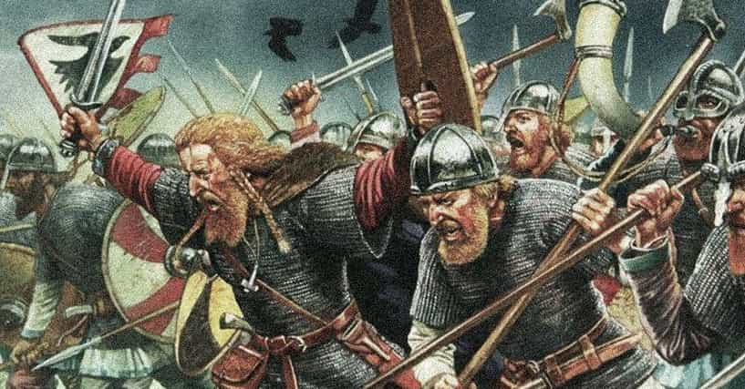
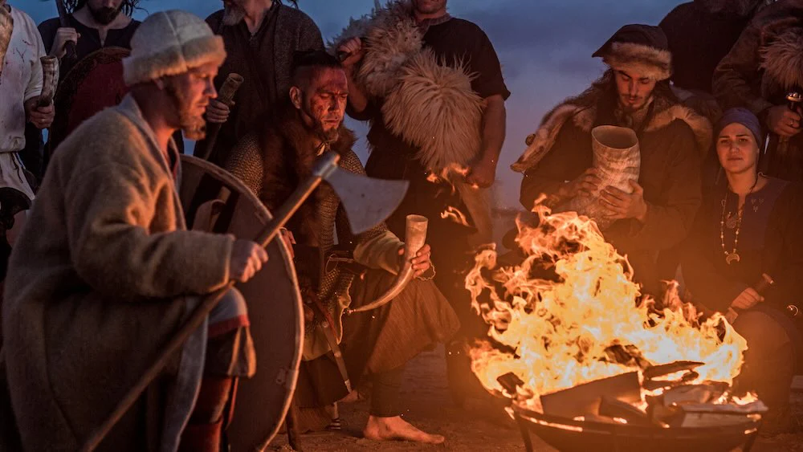

VIKINGS
The Viking lifestyle was centered on farming, seafaring, and exploration. They lived in rural communities, raising crops and livestock, and resided in large communal longhouses. Expert shipbuilders, they used longships for both trading and raiding, reaching as far as North America and the Middle East. Viking society valued bravery, loyalty, and honor, with warriors holding high status, while religion played a key role, with gods like Odin and Thor guiding their beliefs. Though known for raids, many Vikings were also settlers and traders, leaving a lasting cultural legacy.
Viking war plans typically involved careful preparation, including gathering warriors, securing ships, and strategizing for raids or battles. They would choose targets based on wealth, accessibility, and potential for surprise. Before an attack, they often conducted reconnaissance to assess enemy strength and defenses. Vikings favored swift, coordinated assaults, utilizing their longships to launch surprise attacks along coastlines and rivers. Leadership was crucial, with chieftains or kings commanding their forces and inspiring loyalty among their men. Once engaged in battle, Vikings relied on aggressive tactics and close combat, often fighting in groups to overwhelm opponents.
For more info, visit Example Site.